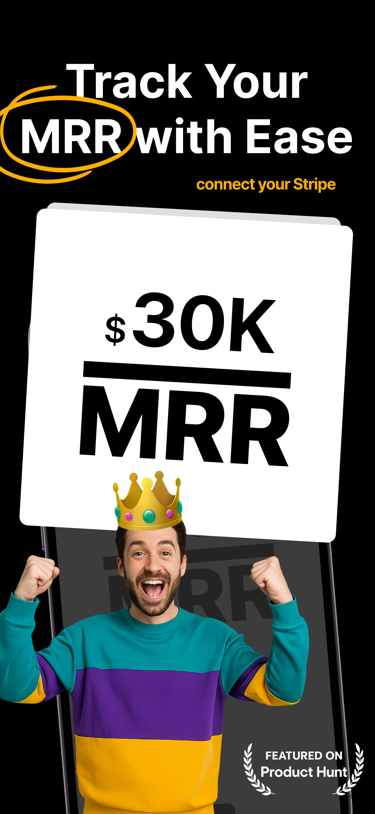
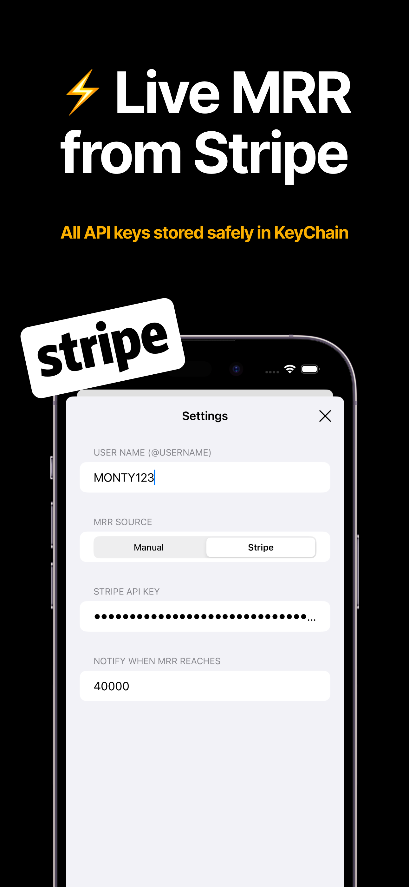
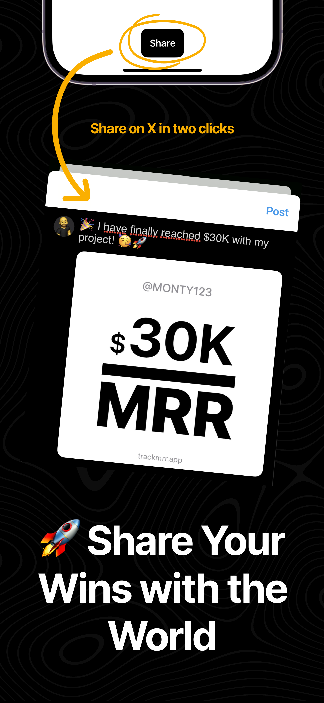

Stop checking Stripe every hour. Get notified when you hit real progress — and stay motivated to keep building.
Start Tracking for FreeEndless coding, launching, marketing — but no clear sign of progress? TrackMRR shows real growth moments automatically, so you stay inspired.
Hit a goal? Get a clean notification you can share in one click. Momentum matters — TrackMRR makes sure you feel it.
From your first $1K to $100K MRR, TrackMRR keeps you motivated. No manual checking, no clutter — just pure momentum.
Don’t let milestones go unnoticed. Build in public, inspire your journey, and grow your SaaS confidently with TrackMRR.
Start Tracking for Free